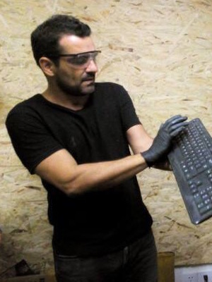
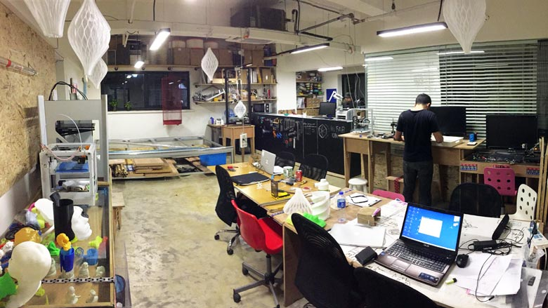
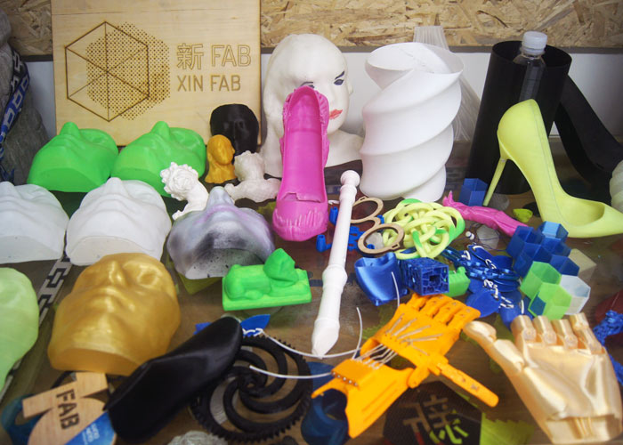

ABOUT

What is XinFab?
XinFab is a fablab located in the heart of the Shanghai.
Xinfab is a non profit organization that supports and encourages everyone to create things.
What's a Fablab?
Fab Lab is the educational outreach component of MIT’s Center for Bits and Atoms (CBA), an extension of its research into digital fabrication and computation. A Fab Lab is a technical prototyping platform for innovation and invention, providing stimulus for local entrepreneurship. A Fab Lab is also a platform for learning and innovation: a place to play, to create, to learn, to mentor, to invent.
Fablabs are a part of maker culture where ordinary people are empowered to design, build, innovate, and invent on their own or with other makers. Fablabs offer makers the space and tools to digitally manufacture objects, from furniture to jewelry, robots to food.
What tools and resources does XinFab offer?
We have multiple machines like:
- Laser cutter
- CNC
TIG and Spot Welders
- 3D printers
- Hydraulic press
- Lathe
machine
- Digital sewing machine
- Soldering station
- Infrared IC heater,
- Diverse assortment of power tools.
XinFab also has public computers installed with SolidWorks and HSMXpress. You can also learn different skills at XinFab workshops, like how to 3D print, design using SketchUp, build your own drone, and more.
How did XinFab get started?
XinFab was founded in 2014 by Lucio Pentagna Guimaraes, who built the first 3D printer of XinFab from scratch. Lucio moved from Brazil to Shanghai three years ago and is a lover of kungfu and sailing. Now, he is located in Portugal and commutes to Shanghai once a month to teach workshops.
Who is involved in XinFab?
XinFab is run by a collective of paid staff, volunteers, interns, and residents.
|  |
Lucio - Founder Lucio moved from Brazil to Shanghai 4 years ago and is the founder of Xinfab, he is an allround maker, but specialised in 3d printers. He is the heart and soul of Xinfab. |
| Yuruky - Staff Yuruky is our new full-time staff member since January 2016. He can help you with 3d printing and lasercutting and usage of the handtools. |
|
 |
Danny - Volunteer/resident Danny is a Dutch product/interior designer and created the new interior to help organize the space better. |
 |
Eva - Volunteer Eva is an American freelance writer based in Shanghai, she is exploring the city's maker/hacker culture and help with daily activities at xinfab including the Wechat account and Alipay payment system. |
 |
Lu Feng - Volunteer Lu Feng is founder of New Planet Under Construction (NGO). His team initiates art therapy by organising workshops and exhibitions to people with autism. |
 |
Simona - Volunteer Together with Eva Simona is helping with daily activities including the Wechat account and Alipay payment system. |
 |
Christelle - Volunteer Christelle is a strategist and helps Xinfab on the marketing side. |
 |
Ugur - Volunteer Ugur is a Chinese literature students and helps Xinfab with marketing. |
 |
Kris - Intern Kris is interning at xinfab 2 days a week and helps with daily activities in and around the lab. |
Our Space





We are located at Hero Center, which is facilitated by PEOPLE2.
Besides having our own working space there is also access to a cafeteria and meeting rooms.
Entrance

CAFETERIA
MEETING ROOM